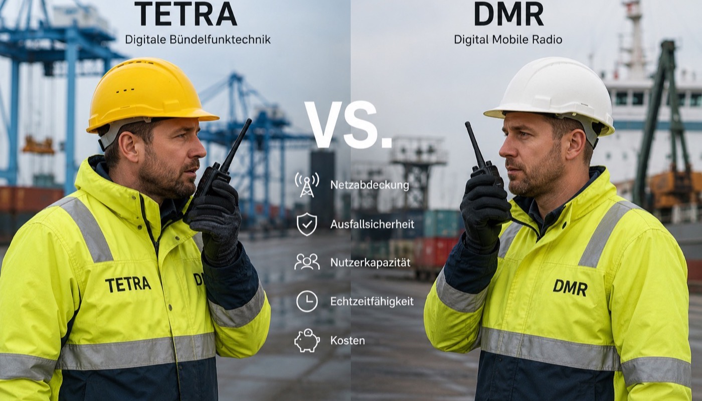

Wer heute ein Betriebsfunksystem plant, steht vor einer Grundsatzentscheidung: TETRA oder DMR? Beide Standards sind digital, verschlüsselt und deutlich leistungsfähiger als analoger Funk – aber sie unterscheiden sich erheblich in Kosten, Komplexität und Einsatzszenarien. Dieser Artikel hilft Ihnen, die richtige Wahl zu treffen.

Warum überhaupt auf digitalen Betriebsfunk umsteigen?
Viele Industriebetriebe in Deutschland arbeiten noch mit analogem Betriebsfunk – oft mit Geräten, die 15 oder 20 Jahre alt sind. Das ist in dreierlei Hinsicht ein Problem:
- Frequenzknappheit: Die Bundesnetzagentur weist für neue Anträge im analogen Bereich kaum noch Frequenzen zu. Wer seinen Funk erneuert, muss auf digital wechseln.
- Sicherheit: Analogfunk ist unverschlüsselt. Jeder mit einem Scanner kann mithören – ein Problem in sensiblen Industrieumgebungen.
- Funktionsumfang: Digitale Systeme bieten Gruppenrufe, Statusmeldungen, Datenfunktion, GPS-Ortung und Integration in Leitsysteme – alles Funktionen, die analog nicht existieren.
Der Umstieg auf digital ist kein Upgrade-Projekt – er ist eine Investition in die Betriebssicherheit.
Was ist DMR – Digital Mobile Radio?
DMR ist ein offener digitaler Funkstandard (ETSI TS 102 361), der gezielt als kosteneffiziente Alternative zu proprietären Systemen entwickelt wurde. DMR nutzt die vorhandenen 12,5-kHz-Kanalraster und erlaubt durch TDMA-Technologie (Zeitschlitzverfahren) zwei gleichzeitige Gespräche auf einem Kanal – was die Frequenzeffizienz verdoppelt.
DMR ist die richtige Wahl wenn:
- Sie bis zu 100 Nutzer in einer überschaubaren Liegenschaft versorgen wollen
- Das Budget begrenzt ist und Kosten eine Hauptrolle spielen
- Sie von analogem Funk migrieren und vorhandene Infrastruktur weiternutzen wollen
- Einfache Bedienung und bekannte Geräte (Motorola, Hytera) gefragt sind
- Der Standort eine einzige Liegenschaft ohne weitreichende Multi-Site-Anforderungen ist
Was ist TETRA – Terrestrial Trunked Radio?
TETRA ist das Bündelfunksystem der Behörden (BOS-Digitalfunk) – aber auch für Großunternehmen und kritische Infrastrukturen eine Option. TETRA bietet durch Bündelfunktechnologie eine dynamische Kanalzuweisung: Viele Nutzer teilen sich einen Frequenzpool, der jeweils bei Bedarf zugewiesen wird.
TETRA ist die richtige Wahl wenn:
- Sie mehr als 200 Nutzer an mehreren Standorten versorgen müssen
- Direkte Integration in behördliche BOS-Netze erforderlich ist (z.B. Hafenbetriebe)
- Maximale Sicherheit und Verschlüsselung (TEA2/TEA3) gefordert ist
- Dispatcher-Funktionen und Leitstellenintegration benötigt werden
- Eine Redundanzinfrastruktur aufgebaut werden soll
TETRA vs. DMR: Die direkte Gegenüberstellung
| Kriterium | DMR Tier II/III | TETRA |
|---|---|---|
| Typische Nutzerzahl | 10 – 200 | 50 – unbegrenzt |
| Investitionskosten | projektabhängig | projektabhängig |
| Verschlüsselung | 40-Bit (Standard) | 256-Bit TEA3 (Behördenniveau) |
| Multi-Site-Fähigkeit | begrenzt (Tier III) | nativ, ausgereift |
| BOS-Integration | Nein | Ja (TETRA-Gateway) |
| Datenfunktion | begrenzt | erweitert (Packet Data) |
| GPS-Ortung | Ja | Ja (native) |
| Geräteauswahl | sehr groß | spezialisiert |
| Frequenzgenehmigung | BNetzA Zuteilung | BNetzA Zuteilung |
| Betriebskosten | niedrig | mittel |
Die Frequenzgenehmigung bei der Bundesnetzagentur
Sowohl DMR- als auch TETRA-Systeme benötigen eine Frequenzzuteilung der Bundesnetzagentur (BNetzA). Das ist ein reguläres Verwaltungsverfahren – aber eines, das Erfahrung und die richtigen Unterlagen erfordert.
BESCom übernimmt die vollständige Antragsstellung für Sie:
- Standortanalyse und Frequenzplanung
- Erstellung der Antragsunterlagen (Technische Beschreibung, Standortblatt, Interferenzberechnung)
- Einreichung und Koordination mit der BNetzA
- Beantwortung von Rückfragen und Nachbesserungen
Die Bearbeitungszeit beträgt bei vollständigen Unterlagen 4 bis 12 Wochen. BESCom plant so, dass die Genehmigung zum Installationsbeginn vorliegt – ohne Verzögerung durch unvollständige Unterlagen.
Was kostet ein Betriebsfunksystem wirklich?
Die häufigste Frage – und keine, die sich ehrlich pauschal beantworten lässt. Die Investition hängt von Ihrem konkreten Betrieb ab: Anzahl der Nutzer, Standortgröße, vorhandene Infrastruktur, Reichweitenanforderungen und die Funktionen, die Ihr Alltag wirklich braucht.
| Szenario | Empfohlenes System | Was die Kosten bestimmt |
|---|---|---|
| Kleiner Betrieb, 1 Standort, 10–20 Nutzer | DMR Tier II | Geräteanzahl, Repeater-Bedarf, Programmiering |
| Mittelgroßer Betrieb, 50–100 Nutzer | DMR Tier II/III | Standortstruktur, Abdeckung, Gruppenkonzept |
| Hafen oder Großbetrieb, Multi-Site, 200+ Nutzer | DMR Tier III oder TETRA | Netzarchitektur, Redundanz, Standortvernetzung |
| Kritische Infrastruktur mit BOS-Integration | TETRA | Zertifizierungsanforderungen, Behördenabstimmung |
Hinzu kommen die laufenden Kosten für Wartung und Frequenzgebühren – die bei Betriebsfunk aber deutlich unter vergleichbaren Mobilfunk-SIM-Kosten liegen. Wer die Gesamtrechnung aufmacht, stellt fest: professioneller Betriebsfunk ist keine Kostenstelle, sondern eine Investition mit messbarem Rückfluss.
💡 Unser Versprechen: Wir nennen Ihnen keine Fantasiepreise – wir analysieren Ihren Bedarf und entwickeln ein Angebot, das exakt zu Ihrem Betrieb passt. Kein Überverkaufen, kein Standardpaket. Nur das, was Sie wirklich brauchen – zum besten Preis-Leistungs-Verhältnis, das der Markt hergibt.
→ Jetzt kostenlose Bedarfsanalyse anfordern
Fazit: Welches System ist das richtige für Sie?
Die kurze Antwort: Für die meisten Industrie- und Hafenbetriebe in Hamburg ist DMR die richtige Wahl – kosteneffizient, einfach zu betreiben und für Größen bis 200 Nutzer technisch vollwertig.
TETRA lohnt sich, wenn Sie mehr als 200 Nutzer vernetzen müssen, BOS-Integration benötigen oder maximale Ausfallsicherheit für kritische Infrastrukturen verlangen.
BESCom berät Sie in einem kostenlosen Erstgespräch – ohne Verkaufsdruck, ehrlich und technisch fundiert. Wir zeigen Ihnen, was Ihr Betrieb wirklich braucht.
Kostenlose Bedarfsanalyse – wir sagen Ihnen ehrlich, ob DMR oder TETRA die bessere Wahl ist.